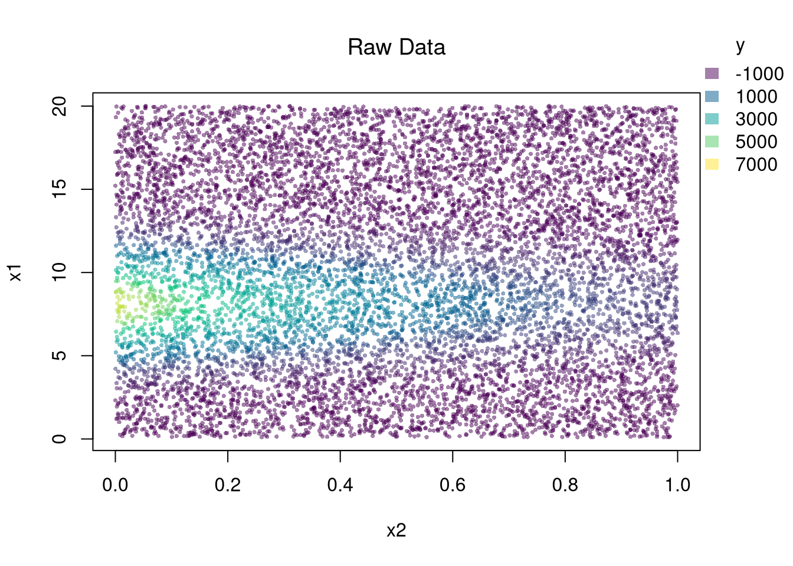

Code
## Simulate data: y is a nonlinear function of x1 and x2 plus noise.
N <- 10000
e <- rnorm(N)
x1 <- seq(.1, 20, length.out=N)
x2 <- runif(N, 0, 1)
y <- 3*exp(-2*x2 + 1.5*x1 - .1*x1^2)*x1 + e
dat <- data.frame(x1, x2, y)
## Create color palette (reused in later examples)
col_scale <- seq(min(y)*1.1, max(y)*1.1, length.out=401)
ycol_pal <- hcl.colors(length(col_scale), alpha=.5)
names(ycol_pal) <- sort(col_scale)
## Add legend (reused in later examples)
add_legend <- function(col_scale,
yl=11,
colfun=function(x){ hcl.colors(x, alpha=.5) },
...) {
opar <- par(fig=c(0, 1, 0, 1), oma=c(0, 0, 0, 0),
mar=c(0, 0, 0, 0), new=TRUE)
on.exit(par(opar))
h <- hist(col_scale, plot=FALSE, breaks=yl-1)$mids
plot(0, 0, type='n', bty='n', xaxt='n', yaxt='n')
legend(...,
legend=h,
fill=colfun(length(h)),
border=NA,
bty='n')
}
## Plot Data
par(oma=c(0, 0, 0, 2))
plot(x1 ~ x2, dat,
col=ycol_pal[cut(y, col_scale)],
pch=16, cex=.5,
main=NA)
title('Raw Data', font.main=1)
add_legend(x='topright', col_scale=col_scale,
yl=6, inset=c(0, .05), title='y')